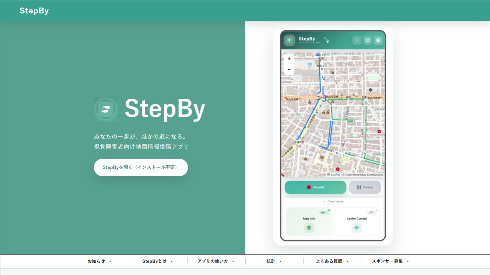

StepByの公式Webサイトを開設しました！

StepByの公式Webサイトを開設いたしました。
StepByとは、視覚障害者向けに点字ブロックなどの地図情報を誰でも記録・共有できるアプリです。 こちらから開けます。
このWebサイトでStepByについての情報や使い方などを発信していきます。よろしくお願いいたします。

StepByの公式Webサイトを開設いたしました。
StepByとは、視覚障害者向けに点字ブロックなどの地図情報を誰でも記録・共有できるアプリです。 こちらから開けます。
このWebサイトでStepByについての情報や使い方などを発信していきます。よろしくお願いいたします。